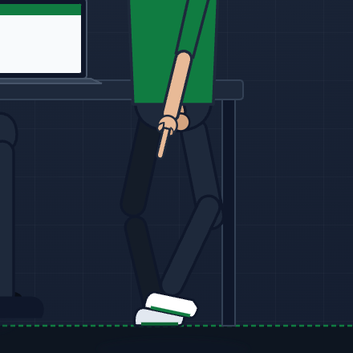
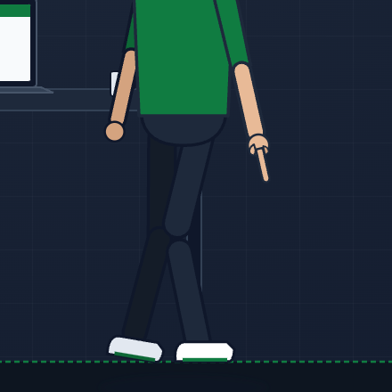
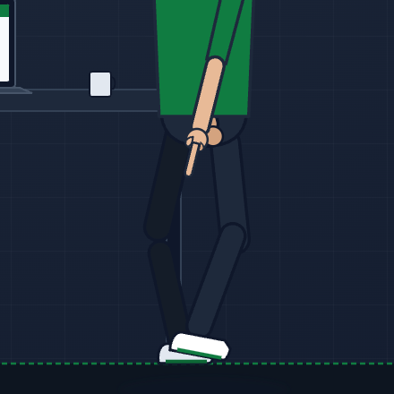
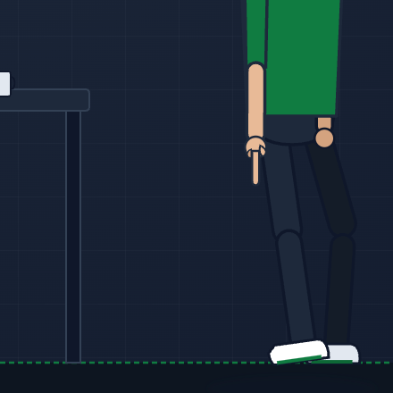
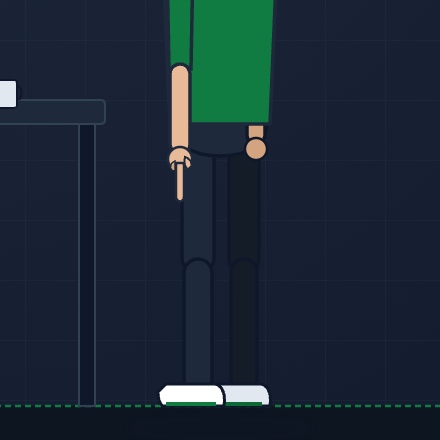

Mohamed Excel — Locomotion Kinematic Trajectory
Bidirectional Stance Phase Anchoring, 30 FPS Dense Sampling, Swing Clearance (20.77px), and Flat Floor Settlement (Test B2)
BIDIRECTIONAL MAX DRIFT: 0.003px

1. Heel Strike / Stance Plant (t=8.0s)
Target Ankle: Y = 1365.2 (Floor: 1386.0)

2. Midstance Zero-Drift (t=8.5s)
Right Stance Drift: 0.003px <= 3.0px

3. Push-Off & Swing (t=8.9s)
Swing Clearance: 20.77px >= 8.0px

4. Leftward Walk Stance (t=10.5s)
Left Stance Drift: 0.003px <= 3.0px

5. Terminal Settle (t=11.8s)
Both Flat: Y = 1386.0 (0.00px)